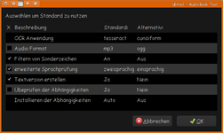
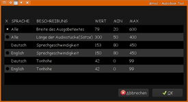
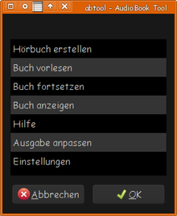

abtool
Dieser Artikel wurde für die folgenden Ubuntu-Versionen getestet:
Ubuntu 16.04 Xenial Xerus
Zum Verständnis dieses Artikels sind folgende Seiten hilfreich:
Um sich elektronische Dokumente "vorlesen" zu lassen, stehen momentan unter Ubuntu nur wenige Möglichkeiten zur Verfügung. Insbesondere lassen sich meist nur .txt-Dateien unmittelbar in "gesprochenen Sprache" umsetzen.
Das hier vorgestellte abtool ist eine Weiterentwicklung von Skripte/Book-To-MP3 und liefert ein umfangreiches Programm, das es ermöglicht, eine Vielzahl von Dokumenttypen einfach in .mp3- bzw .ogg-Dateien umzuwandeln. Momentan werden die Formate .pdf, .doc, .html, .htm, .rtf, .txt, .lit, .jpg, .djvu, .png, .tif und .epub unterstützt. Die Ausgabe erfolgt in Mono (kein Stereo). Standardmäßig wird die Aufnahme in überschaubare Stücke aufgeteilt.
Installation¶
Skript¶
Das Skript wird von der Projektseite  heruntergeladen, es liegt dort auch als .deb-Paket[2] vor, das für alle aktuellen Ubuntu-Versionen verwendbar ist. Um das Skript systemweit nutzen zu können, ohne jeweils den Pfad dazu einsetzen zu müssen, empfiehlt es sich, es mit Root-Rechten [3] nach /usr/local/bin/ zu kopieren und die Rechte [4] zum Ausführen korrekt zu setzen. Die Endung .sh kann dabei auch entfernt werden. Das deb-Paket installiert das Skript entsprechend.
heruntergeladen, es liegt dort auch als .deb-Paket[2] vor, das für alle aktuellen Ubuntu-Versionen verwendbar ist. Um das Skript systemweit nutzen zu können, ohne jeweils den Pfad dazu einsetzen zu müssen, empfiehlt es sich, es mit Root-Rechten [3] nach /usr/local/bin/ zu kopieren und die Rechte [4] zum Ausführen korrekt zu setzen. Die Endung .sh kann dabei auch entfernt werden. Das deb-Paket installiert das Skript entsprechend.
Hinweis!
Fremdsoftware kann das System gefährden.
Voraussetzungen¶
Wenn abtool mit dem Parameter -i gestartet wird, werden benötigte Pakete automatisch installiert.
abtool -i
Anderenfalls müssen zuerst folgende Pakete installiert [1] werden:
espeak
mbrola (multiverse)
poppler-utils (für PDF-Dokumente)
catdoc (universe, für .doc- und .rtf-Dokumente)
html2text (für .html-, .htm- und .lit-Dokumente)
convlit (universe, für .lit-Dokumente)
djvulibre-bin (für .djvu-Dokumente)
imagemagick (für Bildvorverarbeitung)
aspell
aspell-de
aspell-en
tesseract-ocr (universe, für -Dokumente)
tesseract-ocr-deu (universe, Deutsche Sprachausgabe)
tesseract-ocr-eng (universe, Englische Sprachausgabe)
vorbis-tools (multiverse, .ogg-Ausgabe)
 mit apturl
mit apturl
Paketliste zum Kopieren:
sudo apt-get install espeak mbrola poppler-utils catdoc html2text convlit djvulibre-bin imagemagick aspell aspell-de aspell-en tesseract-ocr tesseract-ocr-deu tesseract-ocr-eng vorbis-tools
sudo aptitude install espeak mbrola poppler-utils catdoc html2text convlit djvulibre-bin imagemagick aspell aspell-de aspell-en tesseract-ocr tesseract-ocr-deu tesseract-ocr-eng vorbis-tools
Empfohlen wird zusätzlich folgendes Paket, um auch mp3-Dateien erstellen zu können:
lame (multiverse)
mit apturl
Paketliste zum Kopieren:
sudo apt-get install lame
sudo aptitude install lame
Eine optionale Möglichkeit der Texterkennung bietet:
cuneiform
mit apturl
Paketliste zum Kopieren:
sudo apt-get install cuneiform
sudo aptitude install cuneiform
Funktionsweise¶
Das Skript ermittelt zunächst den Dateityp und wandelt dann den Inhalt in reinen Text um. Zum Einsatz kommen je nach Dateityp pdftotext, clit, djvulibre, tesseract, cuneiform, html2text oder catdoc. Außerdem werden eventuell vorhandene Seitenzahlen sowie Formatierungen entfernt, um später den Textfluss nicht zu stören.
Die Sprache (englisch oder deutsch) wird mittels aspell ermittelt, entweder einmal für das gesamte Dokument oder satzweise (erweiterte Sprachenerkennung). Danach wird der Text mit eSpeak mit der jeweils passenden Stimme in Sprache umgesetzt, sodass z.B, englischsprachige Passagen in deutschen Texten richtig ausgegeben werden. Die Ausgabe wird mittels lame in eine mp3-Datei bzw. mit vorbis-tools in eine ogg-Datei umgewandelt. Das Ergebnis wird im neu erstellten Unterordner DATEINAME abgelegt.
Außer dem Umwandeln besteht auch die Möglichkeit, sich einen Text ("Buch") direkt vorlesen zu lassen, ohne eine Audio-Datei zu erstellen. Hierbei wird der aktuell als Sound ausgegebene Text nebenbei zum Mitlesen angezeigt (siehe Bilder für ein Beispiel der GUI- und Konsolenversion). Wird die Ausgabe unterbrochen, kann an die Wiedergabe später von der letzten Stelle weitergeführt werden.
Es lassen sich gleich mehrere Texte zum Bearbeiten angeben; durchnummerierte Bilddateien werden in einem Text zusammengefasst. Außerdem können andere Sprachen über eigenen Sprachkonfigurationsdateien verwendet werden.
|  |  |
| Einstellungen | Ausgabe anpassen |
Konfiguration¶
In der GUI können unter dem Punkt "Einstellungen" grundlegende Standards gesetzt werden. Weiterhin kann die Audio/Text-Ausgabe unter "Ausgabe anpassen" eingestellt werden. Wenn die jeweilige Checkbox aktiviert ist, wird der Standard-Eintrag verwendet, wenn nicht die Alternative. Allerdings gibt es bei den Einstellungen Probleme, sodass dort die manuelle Bearbeitung der Konfiguration nötig ist.
Benutzung¶
Der Aufruf erfolgt im Terminal [5] über
abtool [DATEI.ENDUNG]
| Anwendungsbeispiele | |
| Funktion | Befehl |
| Anzeigen des Hauptmenü | abtool |
| Umwandeln zweier Hörbücher | abtool "/home/niemand/Homer - Odyssee.pdf" "/home/nichts/Die unendliche Geschichte.pdf" |
Vorlesen (-r) eines Buches in der Kommandozeile (-n) | abtool -nr "/home/niemand/Homer - Odyssee.pdf" |
Weiterlesen (-w) an letzter Stelle (Zenity-Anzeige) | abtool -w |
Direktes Vorlesen (-a) des nach dem Parameter folgenden Textes | abtool -a < mein.txt |

| abtool GUI-Parameter | |
| Option | Funktion |
-h | Zeigt den Hilfetext an |
-r | Vorlesen eines eBooks |
-w | Weiterlesen eines eBooks |
-l | Zeigt eBooks mit "less" oder "zenity" an |
-a | Text vorlesen (z.B. abtool -a "hello world") |
Wird abtool ohne Parameter (Befehl abtool) gestartet, erscheint das Hauptmenü als Zenity-Fenster (siehe Bild links), in dem dann die weiteren Angaben gemacht werden können (Auswahl der gewünschten Dateien etc.) Ein Starten mit angegebenem Parameter, Befehl abtool -<Parameter> überspringt das Hauptmenü und beginnt sofort mit der jeweiligen Aufgabe (Tabelle rechts).
Wird die Option -a ohne weiter Angaben verwendet, öffnet sich ein Fenster, in das ein Text eingegeben werden kann. Wird das Fenster geschlossen, erfolgt die Wiedergabe des eingestellten Textes. Ansonsten erfolgt die direkte Wiedergabe des Textes in den Anführungszeichen. Dateien lassen sich über ein abtool -a < /PFAD/ZUR/DATEI aufrufen; auch sie erscheinen zunächst in einem Textfenster, können dort ggf. noch bearbeitet werden, und werden dann mit dem Schließen des Fensters vorgelesen.
Wenn ein "Buch" angezeigt wird, erscheint der Text ebenfalls in einem Fenster, nach Schleßen wird ein Dateiname zum Speichern des Textes abgefragt. Die Speicherung erfolgt direkt im Homeverzeichnis des Benutzers, dem angegebenen Namen wird allerdings immer ein "abook" vorangestellt.
In der Konsolenvariante (-n) stehen die folgenden Parameter zur Verfügung:
| abtool-Optionen | |||
| Option (Standard) | Funktion | Option | Funktion |
-t, -C | Verwenden von Tesseract (Standard), je nach Quelle etwas genauer bei reinem Text, langsamer | -c, -T | Verwenden von cuneiform, besser bei formatiertem Text, schneller |
-f | Filterung von Sonderzeichen (Standard) | -F | Keine Filterung von Sonderzeichen |
-s <val> | Splitten des Hörbuchs bei <val> 50-600 Sätzen | -S | Splitten aus |
-d | zweisprachige eBooks Verarbeiten (Standard) | -D | zweisprachige eBooks nur in Hauptsprache (schneller) |
-x | auch formatierte .txt-Dateien erzeugen (Standard) | -X | keine .txt-Dateien erzeugen |
-v, -M | ogg-Vorbis statt mp3 ausgeben/erzeugen (Standard) | -m, -V | mp3 statt ogg-Vorbis ausgeben/erzeugen |
-p | Abhängigkeiten prüfen (Standard) | -P | Abhängigkeiten nicht prüfen (wird ev. für händisch installierte mbrola-Sprachpakete benötigt) |
-I | Abhängigkeiten nicht installieren (Standard) | -i | Abhängigkeiten installieren |
-Z | Liste der lesbaren Buchstaben auf Standard setzen | -z <char> | füge Buchstaben zur Liste der lesbaren Buchstaben hinzu |
-o | Sprache ändern | -h | Hilfe, Auflistung aller Optionen |
Die Konfigurationsdatei (~/.abtool/book2ab.conf) kann auch manuell angepasst werden. Die Audio/Text-Ausgabe kann auch manuell in der Sprachkonfigurationsdateien ~/.abtool/lang_XXX angepasst werden (XXX steht für die jeweilige Sprachkennung).
Andere Sprachen hinzuzufügen¶
Die Sprachkonfigurationsdateien besitzen folgenden Aufbau:
TES_OCRLANG=xx CUN_OCRLANG=xx NAME=xx SIGWORDS= xx \| xx \| xx ASPELL_DICT=xx ASPELL_LANG=xx MBROLA_SPEED=150 MBROLA_PITCH=42 MBROLA_LANG=xx XCHAR=xx LANGPACK=xx ... Lokalisierungstexte ...
Um eine neue Sprache hinzuzufügen, kopiert man am besten eine vorhandene Sprachkonfigurationsdateien wie z.B. ~/.abtool/lang_deu nach ~/.abtool/lang_fra. Anschließend sind die obig durch xx angezeigten Werte anzupassen [6]. Die benötigten Sprachkürzel findet man in den Artikel zu tesseract-ocr bzw Cuneiform-Linux, Aspell-Wörterbücher lassen sich mit aspell dump dicts auflisten.
Unter XCHAR können alle benötigten, nicht im englischen Alphabet enthaltenen Sonderzeichen aufgeführt werden.
TES_OCRLANG=fra CUN_OCRLANG=fra NAME=français SIGWORDS= le \| la ASPELL_DICT=fr ASPELL_LANG=fr MBROLA_SPEED=150 MBROLA_PITCH=42 MBROLA_LANG=mb-fr1 XCHAR=êâîûôòèàìùúíáéóç LANGPACK=mbrola-fr1 tesseract-ocr-fra aspell-fr ... Lokalisierungstexte ...
Nachdem die Datei erzeugt wurde steht die Sprache sofort zur Verfügung und wird automatisch verwendet. Lokalisierungstexte können nach Bedarf angepasst und verändern den von abtool angezeigten Text, sobald die Sprache als Standardsprache gewählt wird.
Probleme¶
Falls Probleme auftreten kann das Konfigurationsverzeichnis ~/.abtool gelöscht werden, um alle Einstellungen auf den Standard zurückzusetzen. Alle Daten des letzten Buches gehen hierbei jedoch verloren.
Unter 16.04 wird im Terminal nach jedem Zenity-Aufruf eine Warnung ausgegeben:
Gtk-Message: GtkDialog mapped without a transient parent. This is discouraged.
Der Eintrag an sich ist harmlos, stört allerdings die Übersicht erheblich. Man wird ihn los, indem man im Skript jeden Zenity-Aufruf mit einem ans jeweils Zeilenende gesetztem
2> dev/null
die Meldung ins Nirvana schickt.
Bei der Wiedergabe von Dokumenten wird in der Zenity-Version die letzte Sektion (der internen Unterteilung des Textes) zwar vorgelesen, allerdings nicht in einem Fenster angezeigt. In der Kommandozeilenversion wird alles angezeigt.
Die GUI-Variante beendet sich ggf nach Abschluss der Textwiedergabe nicht selber, sondern muss im Terminal abgebrochen werden ( Strg + C ), die Kommandozeilen-Version kann das besser.
Eine einmal gestartete Textwiedergabe lässt sich auch mit Abbruch des Skriptes nicht direkt beenden, die Ausgabe des gerade vorgelesenen Teils wird immer zu Ende geführt.
Alternativen¶
Sprachausgabe
 - Übersichtsseite
- ÜbersichtsseiteGespeaker - die Stimmen sind einfacher zu konfigurieren, kann allerdings nur .txt in .wav umwandeln
Skripte/pdf2mp3 - Python-Skript, das PDF- und ASCII-Vorlagen in .mp3- oder .wav-Dateien umwandelt.
KMouth - KDE-Programm zur Stimmausgabe
PlayItSlowly kann zur Wiedergabe der mp3-Dateien verwendet werden, um dort auch während der Laufzeit Anpassungen an Tonhöhe und Geschwindigkeit vorzunehmen

- Erstellt mit Inyoka
-
 2004 – 2017 ubuntuusers.de • Einige Rechte vorbehalten
2004 – 2017 ubuntuusers.de • Einige Rechte vorbehalten
Lizenz • Kontakt • Datenschutz • Impressum • Serverstatus -
Serverhousing gespendet von